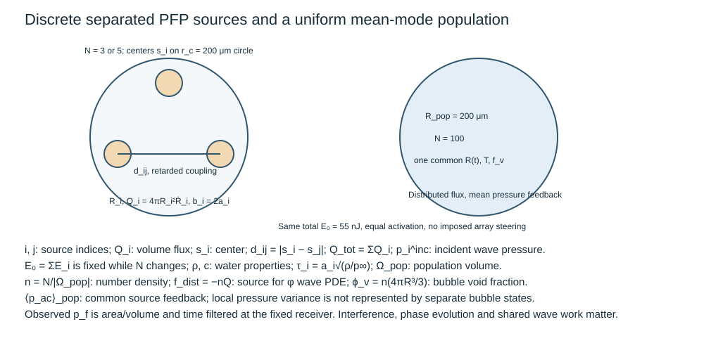
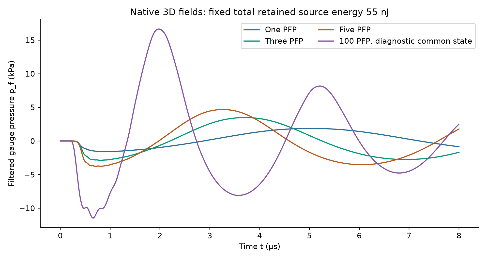

More bubbles change bubble interaction, phase conversion and source size. Hold total retained energy fixed before attributing a larger receiver pressure to a population benefit.
更多气泡会改变气泡相互作用、相变与源尺度。把总保留能量固定后，才可将接收压力增长归因于泡群效应。

The last expression is an illustrative weak separated-source limit. In the native model the complete wave field, including self matching and other sources, supplies the boundary-averaged pressure work. It is not an imposed copy of another bubble’s motion. Every PFP source has its own conserved mass and phase equations.
最后一式是分离弱源的示意极限。原生模型由完整波场（自身匹配和其他源）提供边界平均压力功，而非强加另一气泡运动的副本。每个 PFP 源都有自己的守恒质量和相变方程。
Place the centers on a 200 μm radius circle in the x–y plane. Use three/five distinct spherical matching holes, b_i=2a_i, and one fixed receiver. The exact source cards supply a_i, mass, cold state and entropy; do not simply divide a single-bubble radius or clone its heat budget.
将中心置于 x–y 平面的半径 200 μm 圆上。采用三个／五个不同球形匹配孔 b_i=2a_i，并保留同一接收器。精确源卡给出 a_i、质量、冷态与熵；不能直接平分单泡半径或复制其热预算。

The one/three/five native peaks are approximately 1.870/3.485/4.679 kPa. Their ratio is not N. These are equal-activation reference states; delayed activation, random size, absorption competition and azimuthal jets are not resolved. Source-pressure and phase residuals are listed separately from energy closure.
单泡／三泡／五泡原生峰值约为 1.870／3.485／4.679 kPa，其比例并非 N。它们属于同步激活参考状态；延迟激活、随机尺寸、吸收竞争及方位射流未被解析。源压力和相变残差与能量闭合分开列示。
Rebuild the three-source component after the single-source check. Keep E₀=55 nJ. Before solving five sources, predict why pressure need not scale five-to-three. Then change the center-circle radius from 200 to 300 μm, keeping each source card and the observer unchanged; predict the arrival shift and interaction change before computing.
单源核验后重建三源组件，保留 E₀=55 nJ。在求解五源前，预测压力为何不按五比三增长。再将中心圆半径从 200 改为 300 μm，同时保留每个源卡与观测器；计算前预测到达时间与相互作用的变化。
For r_obs=0.5 mm, r_c=0.2→0.3 mm and c=1480 m/s, the geometric arrival delay increases by 30.12 ns. Larger separation weakens mutual pressure coupling; changed dynamics can also alter pulse timing/amplitude, so geometric delay is not the full prediction. The baseline five-to-three peak ratio is about 1.342. The changed 300 μm geometry is a learner experiment, not a preverified result.
r_obs=0.5 mm、r_c 从 0.2 变为 0.3 mm、c=1480 m/s 时，几何到达延迟增加 30.12 ns。更大间距减弱相互压力耦合；动力学变化还可改变脉冲时刻与振幅，因此几何延迟并非完整预测。基准五泡／三泡峰值比约 1.342。300 μm 的改变属于学习者实验，尚未预先核验。
Ask the agent about any unclear sign, equation, node or assumption. Reply with a brief synthesis or one rebuilt observable; do not copy the reference answer.
任何符号、方程、节点或假设不清楚时，请询问智能体。用简短综合或一个重建观测量作答，无须抄写参考答案。